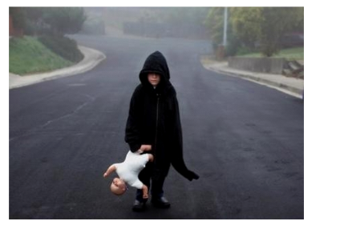
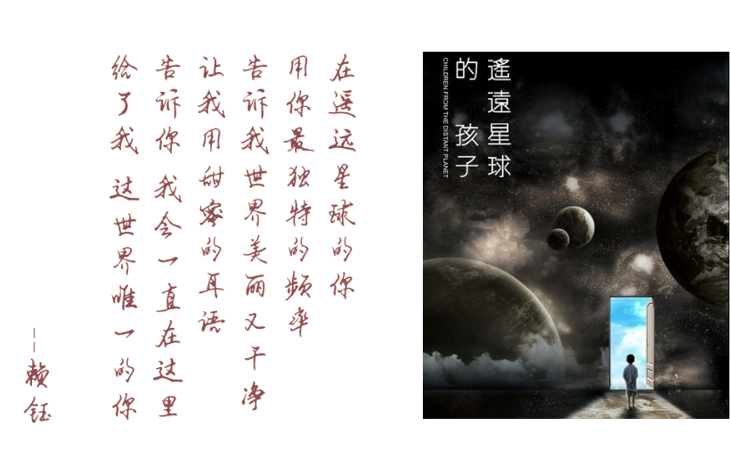

我想，有挺多同学在大学前想过成为一名志愿者，做一些有意义的事。然而在大学没课的时候，有时自己很无聊，却不知道要做些什么。
那么，何不真正开始实施自己当初的想法。
他们是星星的孩子，接触下的那些孩子们，和大众认知的有些不同。没有特殊的记忆力也没有高超的音乐技能，大部分，看起来就是那么平凡。
但他们也不尽相同，
有孩子在你的摸头中安静，
有的却极其排斥着触碰和眼神交流。
那个孩子，一开始，去握他的手，一下，他会突然的抽开，就像你突兀的闯入了他的世界，让他惊慌。但是，他的脸上却是看向你而又不看着你的双眼和大大的笑容。也会突然哭又突然笑。可是，过一段时间，他会乖乖的将他温暖的手放入你的手心。也会，对你无知的笑着，抱着你，不放。尤其，当对方用并不清楚的口齿说了姐姐，内心真的激动无比。
但是，辅导老师说，不能太惯他，否则他会侍宠无学。他做的好给予口头奖励和物质强化剂（即零食一类他焦躁不安分抱一下就放开…你会大都怀着关爱和包容去接触他们，但要知道光有这个并不够。
要教会他认知世界，也需要口令和严格。
有一部以孤独症患者为题材的公益纪录片—《遥远星球的孩子》。
里面说：更重要的，他们的心灵，到底坐落在哪座无人知晓的陌生星球，而那个星球，距离我们有多远？孤独，是不是生理缺陷？我想，比起关注诸如自闭症天才的作品，这些不是自愿封闭自己的孩子们本身更需要我们的关注。
